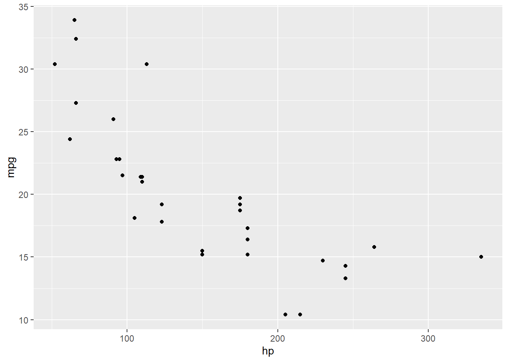

x <- 6
y <- "파랑"
하 <- TRUE
typeof(x)
class(x)
cat("\n") # 줄바꿈
typeof(y)
class(y)
cat("\n") # 줄바꿈
typeof(하)
class(하)[1] "double"
[1] "numeric"
[1] "character"
[1] "character"
[1] "logical"
[1] "logical"대부분 데이터셋은 행과 열을 가진 테이블 형태로 저장됩니다. 이 장에서는 R을 이용할 때 그런 데이터를 가져오고 내보내며 저장하는 방법을 배웁니다. 데이터를 변환하고 요약하며 분석하는 방법도 배울 거에요. 분석은 뒷장에서 자세히 배울 테니 이 장에서는 그저 맛보기로만 다룹니다. 이 장의 목적은 데이터 다루는 걸 전체적으로 한 번 빠르게 경험하고 지나가는 겁니다.
데이터 종류가 다르면 사용하는 통계 방법도 달라집니다. 숫자형 데이터를 이용하여 우리는 박스플롯을 그리고 평균을 계산합니다. 범주형 데이터를 이용하여 우리는 막대 그래프를 그리고 빈도표를 보여줍니다. 당연히 R도 데이터 종류가 다르면 다르게 다룹니다.
R은 6가지 데이터 형 data type 이 있습니다. 대개는 앞 세 개만 알면 됩니다.
double)TRUE 또는 FALSE이런 데이터형들이 모여서 데이터 구조 data structure 를 만듭니다. 데이터 구조는 벡터, 데이터 프레임, 팩터 factor, POSIXct 등을 말합니다. POSIXct 는 날짜와 시간을 저장하는 방식입니다.
R에서 작업의 대상을 객체 object 라고 부르는데 객체는 변수, 벡터, 데이터 프레임, 플롯 등등이 있습니다. 객체가 어떤 종류인지 알려면 typeof나 class 함수를 씁니다. typeof는 데이터 저장형태를 알려주는데 초점이 있고 class는 해당 데이터를 관리하는 방식에 초점이 있습니다.
x <- 6
y <- "파랑"
하 <- TRUE
typeof(x)
class(x)
cat("\n") # 줄바꿈
typeof(y)
class(y)
cat("\n") # 줄바꿈
typeof(하)
class(하)[1] "double"
[1] "numeric"
[1] "character"
[1] "character"
[1] "logical"
[1] "logical"데이터 구조가 벡터일 때는 데이터형이 뭐로 나올까요? 숫자형만 있을 때는 당연히 numeric 으로 나옵니다.
나벡터 <- c(6, 9, 12)
class(나벡터)[1] "numeric"벡터에 숫자형, 문자형, 논리형 등 여러 데이터형을 섞어 넣으면 어떻게 될까요? 문자형이 벡터에 포함되면, R은 벡터에 포함한 모든 객체를 강제로 문자형 데이터로 만듭니다. 숫자형이나 논리형은 문자형으로 전환이 가능하지만, 문자형은 숫자형으로 전환이 불가능하기 때문입니다.
all_together <- c(6, "파랑", TRUE)
all_together
class(all_together)[1] "6" "파랑" "TRUE"
[1] "character"만일 숫자형과 논리형 데이터만 포함한다면 어떨까요? 그러면 R이 숫자형 데이터로 통일합니다. FALSE는 0, TRUE는 1 이 됩니다. 역시 논리형은 숫자형으로 전환이 가능하지만 숫자는 그렇지 못하기 때문입니다.
숫자_논리 <- c(5, TRUE)
숫자_논리
class(숫자_논리)[1] 5 1
[1] "numeric"이렇게 다른 결과가 나오니까 벡터에 다른 종류의 데이터형을 섞을 때 주의해서 사용해야 합니다. 벡터는 그 안에 포함한 데이터가 모두 동일한 종류 class 입니다. 만일 다른 종류가 섞였으면 통일이 가능한 쪽으로 강제로 한 종류로 통일합니다.
R에서 사용하는 거의 모든 데이터 분석을 위한 데이터 구조는 데이터프레임입니다. 열과 행을 지닌 테이블의 한 종류입니다. 아래처럼 벡터에서 데이터프레임을 만들어 봅니다.
이름 <- c("김", "이", "권", "박", "류", "홍", "차", "길", "천" )
나이 <- c(28, 48, 47, 71, 22, 80, 48, 30, 31)
구매 <- c(20, 59, 2, 12, 22, 160, 34, 34, 29)
서점 <- data.frame(이름, 나이, 구매)
서점 이름 나이 구매
1 김 28 20
2 이 48 59
3 권 47 2
4 박 71 12
5 류 22 22
6 홍 80 160
7 차 48 34
8 길 30 34
9 천 31 29데이터프레임은 각 열(세로 줄) column 이 변수를 나타내고 각 행(가로 줄) row 이 사례를 나타내는 테이블입니다. 이런 테이블에서 변수는 열과 동일하게 여겨집니다.
테이블의 종류는 대개 네 가지가 있습니다.
우선 대부분 경우에 이 네 가지는 매우 유사해서 이들 중 어느 것을 사용하던 이용자는 별로 구분할 필요가 없습니다. 예를 볼까요? R 기본에 있는 데이터셋 두 개입니다.
매트릭스 형태입니다.
?WorldPhones
class(WorldPhones)
View(WorldPhones)데이터 프레임입니다.
?airquality
class(airquality)
View(airquality)티블입니다. ggplot2 패키지에서 데이터셋을 불러와서 살펴봅니다.
library(ggplot2)
?msleep
class(msleep)
View(msleep)데이터셋은 다른 종류로 변환이 가능합니다.
WorldPhonesDF <- as.data.frame(WorldPhones)
class(WorldPhonesDF)
airqualityMatrix <- as.matrix(airquality)
class(airqualityMatrix)[1] "data.frame"
[1] "matrix" "array" 변환할 때 객체의 속성만 변환하고 실제 테이블 형태는 변환되지 않아요. WorldPhones 매트릭스가 WorldPhonesDF 데이터프레임으로 속성은 변환되었지만 자료 구성 형태는 그대로 있으므로 통계프로그램에 사용하지 못해요. 일반적인 데이터셋 형태로 자료 구성 구조를 바꾸어야 합니다.
아래는 WorldPhone 데이터를 이용해서 비교한 것입니다. 왼쪽이 원래 매트릭스 구조이고 이걸 as.data.frame 함수을 사용해서 변환해도 속성만 매트릭스에서 데이터프레임으로 바뀌고 구조는 아래 왼쪽 테이블과 동일하게 유지합니다.
이걸 통계에 사용하는 데이터 구조로 바꾸려면 오른쪽처럼 다시 정리해야 합니다. 네 번 관찰이므로 사례가 넷입니다. 북아메리가에서 1951년에 한 번 관찰, 1956년에 또 관찰. 유럽에서 1951년에 한 번 관찰, 1956년에 또 관찰. 그래서 관찰값(사례)이 네 개가 됩니다.
Table 5.1: 매트릭스 구조와 통계분석에 사용하는 일반적 테이블 구조의 비교
| N.Amer | Europe | ||
|---|---|---|---|
| 1951 | | | 45939 | 21574 |
| 1956 | | | 60423 | 29990 |
| 번호 | 전화대수 | 지역 | 연도 |
|---|---|---|---|
| 1 | 45939 | N.Amer | 1951 |
| 2 | 60423 | N.Amer | 1956 |
| 3 | 21574 | Europe | 1951 |
| 4 | 29990 | Europe | 1956 |
여기서는 뉴욕의 대기 질을 조사한 airquality 데이터셋을 이용합니다.
3 장의 숫자형 자료 에서 mean 함수를 사용해서 벡터의 평균을 계산하는 법을 배웠습니다. 이번에는 데이터프레임 속의 벡터의 평균을 계산하는 걸 배워봅시다. 데이터프레임 속의 벡터는 이렇게 표현합니다: 데이터프레임_이름$벡터_이름
mean(airquality$Temp)[1] 77.88235벡터 속의 요소 하나를 끄집어내려면 요소의 번호를 특정합니다.
airquality$Temp[5][1] 56데이터셋에서 벡터를 특정하지 않고 행과 열 번호만으로 요소를 끄집어낼 수 있어요. 우선 airquality 데이터셋의 벡터(변수)가 어떤 순서인지 알아봅니다.
names(airquality)[1] "Ozone" "Solar.R" "Wind" "Temp" "Month" "Day" 결과에서 Temp가 넷째 열이라는 것을 알았습니다. 우리가 원하는 건 Temp의 5번째 요소입니다.
airquality[5, 4][1] 56아래처럼 요소를 끄집어내는 방법은 다양합니다.
airquality[5, 4] 5번째 행, 4번째 열 요소airquality[5,] 5번째 행 전부airquality[,4] 4번째 열 전부airquality[[4]] 4번째 열 전부airquality[, c(2, 4, 6)] 둘째, 넷째, 여섯째 열 전부airquality[, -2] 둘째 열을 뺀 나머지 열 전부airquality[, c("Temp", "Wind")] Temp와 Wind 열 전부나이 <- c(28, 48, 47, 71, 22, 80, 48, 30, 31)
구매 <- c(20, 59, 2, 12, 22, 160, 34, 34, 29)
서점 <- data.frame(나이, 구매)
서점$나이[2] <- 18
서점$나이[1] 28 18 47 71 22 80 48 30 31위에서 나이의 둘째 요소가 48 \(\rightarrow\) 18 로 바뀌었어요.
서점$나이 <- 서점$나이 * 12
서점$나이[1] 336 216 564 852 264 960 576 360 372나이가 몇 년에서 몇 개월로 단위가 바뀌었어요.
데이터프레임에 벡터(변수)를 추가해볼게요.
서점$방문_기간 <- c(5, 2, 20, 22, 12, 31, 9, 10, 11)
서점 나이 구매 방문_기간
1 336 20 5
2 216 59 2
3 564 2 20
4 852 12 22
5 264 22 12
6 960 160 31
7 576 34 9
8 360 34 10
9 372 29 11최대값을 알고 싶을 때
max(airquality$Temp)[1] 97최대값이 어디 있는지 알고 싶을 때
which.max(airquality$Temp)[1] 120Temp의 요소가 90 이상인지 알고싶을 때. 각 요소가 90이상이면 TRUE, 아니면 FALSE 값을 되줍니다.
airquality$Temp > 90 [1] FALSE FALSE FALSE FALSE FALSE FALSE FALSE FALSE FALSE FALSE FALSE FALSE
[13] FALSE FALSE FALSE FALSE FALSE FALSE FALSE FALSE FALSE FALSE FALSE FALSE
[25] FALSE FALSE FALSE FALSE FALSE FALSE FALSE FALSE FALSE FALSE FALSE FALSE
[37] FALSE FALSE FALSE FALSE FALSE TRUE TRUE FALSE FALSE FALSE FALSE FALSE
[49] FALSE FALSE FALSE FALSE FALSE FALSE FALSE FALSE FALSE FALSE FALSE FALSE
[61] FALSE FALSE FALSE FALSE FALSE FALSE FALSE FALSE TRUE TRUE FALSE FALSE
[73] FALSE FALSE TRUE FALSE FALSE FALSE FALSE FALSE FALSE FALSE FALSE FALSE
[85] FALSE FALSE FALSE FALSE FALSE FALSE FALSE FALSE FALSE FALSE FALSE FALSE
[97] FALSE FALSE FALSE FALSE FALSE TRUE FALSE FALSE FALSE FALSE FALSE FALSE
[109] FALSE FALSE FALSE FALSE FALSE FALSE FALSE FALSE FALSE FALSE FALSE TRUE
[121] TRUE TRUE TRUE TRUE TRUE TRUE TRUE FALSE FALSE FALSE FALSE FALSE
[133] FALSE FALSE FALSE FALSE FALSE FALSE FALSE FALSE FALSE FALSE FALSE FALSE
[145] FALSE FALSE FALSE FALSE FALSE FALSE FALSE FALSE FALSE아래는 데이터셋에서 Temp가 90 이상인 사례만 뽑아서 볼 때
airquality[airquality$Temp > 90, ] Ozone Solar.R Wind Temp Month Day
42 NA 259 10.9 93 6 11
43 NA 250 9.2 92 6 12
69 97 267 6.3 92 7 8
70 97 272 5.7 92 7 9
75 NA 291 14.9 91 7 14
102 NA 222 8.6 92 8 10
120 76 203 9.7 97 8 28
121 118 225 2.3 94 8 29
122 84 237 6.3 96 8 30
123 85 188 6.3 94 8 31
124 96 167 6.9 91 9 1
125 78 197 5.1 92 9 2
126 73 183 2.8 93 9 3
127 91 189 4.6 93 9 4Temp 가 90도 이상인 사례/행 번호들을 되줍니다.
which(airquality$Temp > 90) [1] 42 43 69 70 75 102 120 121 122 123 124 125 126 127아래는 Temp의 모든 요소가 90이상이면 TRUE, 아니면 FALSE.
all(airquality$Temp > 90)[1] FALSE하나라도 90 이상이면 TRUE, 아니면 FALSE.
any(airquality$Temp > 90)[1] TRUE아래는 Temp 요소 중에서 90 이상인 것의 비율. 왜냐면 TRUE는 1, FALSE는 0으로 하여 평균을 계산하니 그게 비율이 됩니다.
mean(airquality$Temp > 90)[1] 0.09150327리스트 list 는 벡터나 데이터프레임처럼 데이터 구조 형태의 하나입니다. 벡터나 데이터프레임이 일정한 틀을 갖는데 비해서 리스트는 좀 형태가 난잡합니다. 아무거나 넣는 형태라고 할까요? 아래의 리스트 예를 봅시다.
li <- list(보호자="영희", 아이_수=3, 아이_나이=c(4, 7, 9), 아이_이름=c("수동", "길동", "신혜") )
li$보호자
[1] "영희"
$아이_수
[1] 3
$아이_나이
[1] 4 7 9
$아이_이름
[1] "수동" "길동" "신혜"리스트 변수인 li는 그 안에 네 개의 데이터를 품고 있는데 심지어 이름도 붙어 있습니다. 네 개의 데이터 형태는 문자형, 숫자형, 벡터, 벡터 등입니다. 이런 리스트 형태는 나중에 분산분석이나 회귀분석 등의 R 통계함수 결과를 변수로 되줄 때 그 변수의 형태가 주로 리스트입니다.
리스트 등 변수가 생기면 환경 패널에 나타나므로 그것을 보고 요소를 찾을 수 있습니다. 예를 들어, 위의 li$아이_수의 값을 부르려면 li[[2]] 또는 li[["아이_수"]]로 표시합니다. 위의 li$아이_나이의 둘째 요소 값을 구하려면 li[[3]][2]로 표기합니다.
li[2] # 괄호가 하나면 이름과 값을 되준다
li[[2]] # 괄호가 둘이면 값을 되준다
li[["아이_수"]] # 번호 대신 요소 이름을 적어도 된다
li[[3]][2] # 요소가 벡터일 때 그 안의 하위요소 값을 추출한다 $아이_수
[1] 3[1] 3[1] 3[1] 7참고로 여러 데이터 형태를 간단히 보면 (청크 옵션 layout-ncol: 4 )
ve <- c(1, 2, 3, 4) # 벡터
ve
ma <- matrix(c(5, 6, 7, 8), nrow=2) # 매트릭스
ma
li <- list(보호자="영희", 아이_수=3, 아이_나이=c(4, 7, 9), 아이_이름=c("수동", "길동", "신혜") ) # 리스트
li
키 = c(174, 182, 167, 164, 161)
무게 = c(72, 74, 65, 62, 59)
da <- data.frame(키, 무게) # 데이터 프레임
da[1] 1 2 3 4 [,1] [,2]
[1,] 5 7
[2,] 6 8$보호자
[1] "영희"
$아이_수
[1] 3
$아이_나이
[1] 4 7 9
$아이_이름
[1] "수동" "길동" "신혜" 키 무게
1 174 72
2 182 74
3 167 65
4 164 62
5 161 59R에서 간단한 변수를 만들거나 또는 내장된 데이터셋을 가져와 사용할 수 있습니다. 그러나 통계분석의 대부분은 외부에서 데이터를 가져와 분석합니다. 많이 사용되는 형태는 .csv 이거나 .xlsx 입니다. .csv 파일은 쉼표로 값을 구분하는 파일이고 .xlsx 파일은 엑셀 파일입니다.
파일을 R에 가져오려면 그 파일의 경로를 지정하거나 작업 폴더 working firectory 에 존재해야 합니다. 작업폴더와 경로를 보려면 콘솔 패널에 아래 코드를 칩니다.
getwd()[1] "C:/Users/Choon/Naver MYBOX/Quarto/StaAna-QBook"작업 폴더를 지정할 때 setwd 를 사용하거나 또는 메뉴의 Session > Set Working Directory > Choose Directory를 사용합니다. 또는 파일 패널의 파일 탭에서 맨 오른쪽의 …을 클릭해서 원하는 폴더로 가고, 중간의 톱니바퀴를 클릭해서 Set as Working Directory 를 선택합니다.
요즘에는 csv 파일도 엑셀을 사용해서 만들고 저장하고 수정할 수 있어서 편합니다. 아래처럼 코드를 이용하여 외부 데이터를 가져와 내부 데이터셋으로 지정합니다.
imported_data <- read.csv("../file_name.csv") 더 편한 방법이 있어요. 파일 패널 창의 (주로 오른쪽 아래 창) 메뉴에서 …를 클릭해서 열려는 파일이 있는 폴더로 갑니다. 그리고 그 파일을 클릭하면 메뉴 창이 뜨는데 Import Dataset를 선택합니다. 이때 파일 이름이 데이터셋 이름이 되는데 수정해도 됩니다.
인터넷에서 다운받을 수 있습니다. 아래는 WHO 세계보건기구의 결핵 보고서입니다.
# WHO 결핵 데이터 다운받기
tb_data <- read.csv("https://tinyurl.com/whotbdata")우리가 흔히 사용하는 엑셀 파일을 가져와 내부 데이터셋으로 만듭니다.
# install.packages("openxlsx")
library(openxlsx)
imported_from_Excel <- read.xlsx("../file_name.xlsx")여기에서도 더 편한 방법이 있어요. 파일 패널 메뉴의 …를 이용해서 가져오려는 파일이 있은 폴더로 이동한 다음에 그 파일을 클릭하면 메뉴 창이 나옵니다. 그때 Import Dataset를 선택하면 됩니다. 이때 필요한 패키지가 없으면 자동적으로 그 패키지를 설치합니다. 이때 아마도 설치되는 건 readxl 패키지고 명령어는 read_excel입니다.
데이터를 다운받으면 아래처럼 함수를 이용해서 파일을 획인해 보는 습관을 갖는 게 좋습니다.
View(imported_from_Excel)
str(imported_from_Excel)R에서 데이터를 저장하거나 내보낼 때 .csv 파일이나 .xlsx 또는 .RData를 사용합니다.
먼저 데이터를 만듭니다.
age <- c(28, 48, 47, 71, 22, 80, 48, 30, 31)
purchase <- c(20, 59, 2, 12, 22, 160, 34, 34, 29)
bookstore <- data.frame(age, purchase) # 두 변수의 요소 숫자가 일치해야 한다.csv 파일로 외부에 내보냅니다.
write.csv(bookstore, "bookstore.csv").xlsx 파일로 외부에 내보냅니다.
library(openxlsx)
write.xlsx(bookstore, "bookstore.xlsx")RData 형태로 저장하고 불러오는 방법이에요. 위의 bookstore 데이터셋을 저장하는 걸 예로 듭니다.
(만일 R을 새로 시작했으면 위에서 bookstore를 생성해 주세요.)
save(bookstore, age, file = "myData.RData")모든 것(모든 객체)을 저장할 때는 save.image 를 사용합니다.
save.image(file = "allMyData.RData")저장한 객체를 불러올 때는 load 함수를 사용합니다. 외부 파일은 형태가 외부에서 규정한 것(.csv, xlsx 등)이지만 객체는 R에서 규정한 형식이므로 불러오면 바로 사용할 수 있습니다.
load(file = "myData.RData")각 데이터 분석마다 새 폴더를 만들어서 코드, 데이터, 분석결과 outputs 등을 저장하는 게 좋습니다. RStudio에서는 새 프로젝트를 생성하면 새 폴더를 만들어 거기에 프로젝트를 연결시킵니다. 그래서 그 프로젝트를 불러오면 자동으로 그 폴더가 작업 폴더가 됩니다. 프로젝트에서 생성하는 프로그램과 자료, 글, 데이터 등이 언제나 연관된 프로젝트 폴더에 저장이 되므로 편리하고 혼동되지 않습니다. 여러 프로젝트를 실행하면 여러 작업폴더를 각각 사용할 수 있습니다.
새 프로젝트를 만들려면 메뉴에서 File > New Project 를 선택하면 됩니다. 새 프로젝트는 기존의 폴더와 연관할 수 있고 또는 새 폴더를 만들어 연관한 수 있습니다. 프로젝트 파일은 .Rproj 입니다.
프로젝트를 실행할 때, 데이터를 하위 폴더에 저장하면 좋아요. 이때 상대적 경로를 변수로 지정하면 편하게 사용합니다. 상대적 경로란 작업폴더까지는 적을 필요가 없고 하위 폴더와 파일 이름만 적으면 된다는 의미입니다. 예를 들어.
file_path <- "하위폴더_이름/bookstore.csv"
이것은 작업폴더 아래의 하위폴더_이름 폴더에 있는 bookstore.csv 파일을 file_path 란 변수에 저장하는 명령입니다. 앞으로 file_path를 사용하면 그 파일을 불러올 수 있습니다.
만일 현재 작업폴더의 상위 폴더에 데이터 파일이 존재한다면 아래처럼 코드를 실행해서 상대경로를 file_path 변수에 저장합니다. 현재 폴더의 상위 폴더는 “..”라고 표현합니다.
file_path <- "../bookstore.csv"
R은 통계적 가설 검정을 위한 함수를 많이 보유합니다. 앞으로 자세한 것을 배우지만 여기서는 간단한 t 검정을 실시합니다. t 검정은 Student t-test 라고 불립니다. t 검정은 두 표본 집단의 평균 차이가 단순한 우연인지 아니면 정말로 의미있는 차이인지 확률적으로 검정하는 통계기법입니다.
육식동물(canivores)과 초식동물(herbivores)의 잠 시간 평균을 비교한다고 합시다. ggplot2 패키지의 msleep 데이터셋을 사용하고 두 벡터 변수를 투입합니다. vore 변수는 carni(육식)과 herbi(초식)의 두 종류 동물 집단을 대표하는 두 개 변수값을 가지고 sleep_total은 잠 시간을 측정한 숫자값을 변수값으로 가집니다.
library(ggplot2)
육식동물 <- msleep[msleep$vore == "carni",]
초식동물 <- msleep[msleep$vore == "herbi",]
t.test(육식동물$sleep_total, 초식동물$sleep_total)
Welch Two Sample t-test
data: 육식동물$sleep_total and 초식동물$sleep_total
t = 0.63232, df = 39.31, p-value = 0.5308
alternative hypothesis: true difference in means is not equal to 0
95 percent confidence interval:
-1.911365 3.650509
sample estimates:
mean of x mean of y
10.378947 9.509375 위의 것은 육식동물과 초식동물의 평균 잠 시간이 차이가 있는가 하는 가설을 검정하는 것이에요. 조건을 더 자세하게 줄 수 있어요. 아래는 육식동물이 더 잠을 많이 잔다는 가설을 95%의 확률로 검정하는 것이에요.
t.test(육식동물$sleep_total, 초식동물$sleep_total,
conf.level = 0.95,
alternative = "greater",
var.equal = TRUE)
Two Sample t-test
data: 육식동물$sleep_total and 초식동물$sleep_total
t = 0.62514, df = 49, p-value = 0.2674
alternative hypothesis: true difference in means is greater than 0
95 percent confidence interval:
-1.462515 Inf
sample estimates:
mean of x mean of y
10.378947 9.509375 t 검정은 뒤에 더 자세하게 공부할 겁니다.
mtcars 데이터는 R이 기본으로 제공합니다. 1970년대 차에 관한 것인데, 연료소비와 실린더 수 등 여러 정보를 포함합니다. 데이터셋을 살펴봅니다.
?mtcars
View(mtcars)여기서는 총마력(hp)과 연료비(mpg)의 관계를 살펴봅니다.
library(ggplot2)
ggplot(mtcars, aes(hp, mpg)) +
geom_point()
그래프에 나타난 점들이 완벽한 직선은 아니지만, 그래도 선형회귀모형은 그려볼 수 있어 보입니다. 총마력(hp)이 독립/설명 변수, 연료비(mpg)가 종속/결과 변수입니다.
m <- lm(mpg ~ hp, data = mtcars)
summary(m)
Call:
lm(formula = mpg ~ hp, data = mtcars)
Residuals:
Min 1Q Median 3Q Max
-5.7121 -2.1122 -0.8854 1.5819 8.2360
Coefficients:
Estimate Std. Error t value Pr(>|t|)
(Intercept) 30.09886 1.63392 18.421 < 2e-16 ***
hp -0.06823 0.01012 -6.742 1.79e-07 ***
---
Signif. codes: 0 '***' 0.001 '**' 0.01 '*' 0.05 '.' 0.1 ' ' 1
Residual standard error: 3.863 on 30 degrees of freedom
Multiple R-squared: 0.6024, Adjusted R-squared: 0.5892
F-statistic: 45.46 on 1 and 30 DF, p-value: 1.788e-07\(mpg = \alpha + \beta * hp\) : 이 선형 모델은 총마력(hp)이 연료비(mpg)를 예측하는 모형입니다. 즉 hp가 1 만큼 높아질수록 mpg가 \(\beta\)만큼 높아지고, hp가 낮아질수록 mpg도 낮아진다는 걸 나타냅니다. lm 함수의 결과가 summary 함수를 통해서 나타납니다. \(\beta\) 숫자가 나와 있는데 그 외에 여러 정보도 알려줍니다.
geom_abline 함수를 이용해서 산포도 위에 회귀선을 그릴 수 있고, coef 함수를 사용해서 회귀계수를 구할 수 있습니다.
# 위의 선형회귀모형을 확인한다
coef(m)(Intercept) hp
30.09886054 -0.06822828 # 회귀선을 산포도에 추가한다
ggplot(mtcars, aes(hp, mpg)) +
geom_point() +
geom_abline(aes(intercept = coef(m)[1], slope = coef(m)[2]),
colour = "red")잔차 그래프를 그릴 수도 있습니다.
plot(m)독립변수를 추가해서 다중회귀분석을 할 수도 있습니다. 여기서는 자동차 무게(wt)를 추가합니다. 독립변수는 여러 개를 추가할 수 있어요.
m2 <- lm(mpg ~ hp + wt, data = mtcars)
summary(m2)
Call:
lm(formula = mpg ~ hp + wt, data = mtcars)
Residuals:
Min 1Q Median 3Q Max
-3.941 -1.600 -0.182 1.050 5.854
Coefficients:
Estimate Std. Error t value Pr(>|t|)
(Intercept) 37.22727 1.59879 23.285 < 2e-16 ***
hp -0.03177 0.00903 -3.519 0.00145 **
wt -3.87783 0.63273 -6.129 1.12e-06 ***
---
Signif. codes: 0 '***' 0.001 '**' 0.01 '*' 0.05 '.' 0.1 ' ' 1
Residual standard error: 2.593 on 29 degrees of freedom
Multiple R-squared: 0.8268, Adjusted R-squared: 0.8148
F-statistic: 69.21 on 2 and 29 DF, p-value: 9.109e-12aggregate 함수는 집단 별로 요약합니다. 예를 들어, 한국의 기온 통계를 계산할 때, 모든 측정 기간 전체의 기온 평균을 계산하는 것도 좋지만, 각 월 별로 평균을 계산한다면 일 년 동안의 기온을 예측하는 데 더 도움이될 것입니다. 이렇게 한 해 전체의 기온을 측정한 데이터에서 월 별로 평균을 각각 계산할 때 aggregate를 사용합니다. grouped summary 라고 봐도 됩니다.
R 기본에 포함한 airquality 데이터셋을 사용합니다.
aggregate(Temp ~ Month, data = airquality, FUN = mean) Month Temp
1 5 65.54839
2 6 79.10000
3 7 83.90323
4 8 83.96774
5 9 76.90000여기서 평균을 계산할 때 디폴트로 결측값은 제외합니다. 두 변수의 표준편처를 동시에 계산할 수도 있어요.
aggregate(cbind(Temp, Wind) ~ Month, data = airquality, FUN = sd) Month Temp Wind
1 5 6.854870 3.531450
2 6 6.598589 3.769234
3 7 4.315513 3.035981
4 8 6.585256 3.225930
5 9 8.355671 3.461254by 함수도 비슷한 기능이지만 평균을 계산할 때는 아웃풋 포맷이 aggregate가 더 좋아요. 상관계수처럼 두 변수가 동시에 연결되는 통계분석에는 by 함수가 더 나아요. 아래는 R 기본에 포함한 airquality 데이터셋을 이용한 예입니다.
names(airquality) # 3과 4열에 있는 Temp와 Wind 변수를 확인한다.[1] "Ozone" "Solar.R" "Wind" "Temp" "Month" "Day" by(airquality[, 3:4], airquality$Month, cor)airquality$Month: 5
Wind Temp
Wind 1.000000 -0.373276
Temp -0.373276 1.000000
------------------------------------------------------------
airquality$Month: 6
Wind Temp
Wind 1.0000000 -0.1210353
Temp -0.1210353 1.0000000
------------------------------------------------------------
airquality$Month: 7
Wind Temp
Wind 1.0000000 -0.3052355
Temp -0.3052355 1.0000000
------------------------------------------------------------
airquality$Month: 8
Wind Temp
Wind 1.0000000 -0.5076146
Temp -0.5076146 1.0000000
------------------------------------------------------------
airquality$Month: 9
Wind Temp
Wind 1.0000000 -0.5704701
Temp -0.5704701 1.0000000방문시간(visit_lenghth)으로 구매(purchase)를 나누어서 시간당 구매(rev_per_minute)를 구할 때
bookstore$rev_per_minte <- bookstore$purchase / bookstore$visit_length
bookstore$ 를 자꾸 적은 건 불편해요. 파이프는 이걸 해소합니다.
magrittr 패키지는 pipes 라는 도구를 R에 추가합니다. pipes는 코드를 읽고 편집하기 편하게 합니다.
install.packages("magrittr")통상적으로 우리가 하는 방식:
# 더운 날을 추출한다:
airquality2 <- airquality[airquality$Temp > 80, ]
# 바람 속도을 초속으로 변환한다
airquality2$Wind <- airquality2$Wind * 0.44704
# 각 월의 바람 속도의 평균을 계산한다:
hot_wind_means <- aggregate(Wind ~ Month, data = airquality2,
FUN = mean)이건 코드 자체는 문제가 없지만, airquality를 아주 여러 번 적는다는 게 문제예요. 아래처럼 aggregate 를 사용하면 좀 줄일 수 있지만, 그러면 코드를 이해하기가 좀 어려워지지요.
# 더 간단한 유형
hot_wind_means <- aggregate(Wind*0.44704 ~ Month,
data = airquality[airquality$Temp > 80, ],
FUN = mean)magrittr는 pipe라고 부르는 %>%를 도입해서 잇단 함수를 편하게 사용합니다.
new_variable <- function_2(function_1(your_data))위의 것을 아래처럼 적습니다.
your_data %>% function_1 %>% function_2 -> new_variable자, 예를 들어봅시다. 아래 것은 통상적 방법입니다. subset 함수로 화씨 80도 넘는 더운 날의 데이터만 뽑아내고 magrittr 의 inset 함수로 바람 속도를 마일에서 미터로 고쳤습니다. aggregate 로 평균을 변수로 만들었구요.
library(magrittr)
# 더운 날을 추출한다:
airquality2 <- subset(airquality, Temp > 80)
# 바람 속도을 초속으로 변환한다
airquality2 <- inset(airquality2, "Wind",
value = airquality2$Wind * 0.44704)
# 각 월의 바람 속도의 평균을 계산한다:
hot_wind_means <- aggregate(Wind ~ Month, data = airquality2,
FUN = mean)아래 것은 pipe를 이용한 겁니다. 왼쪽 것 (데이터) 안에서 오른쪽 것(데이터)이 행해지니까 airquality 나 airquality2를 지정할 필요가 없어졌습니다. 즉 왼쪽이 오른쪽의 실행 범위를 지정/제한해주는 거지요.
airquality %>%
subset(Temp > 80) %>%
inset("Wind", value = .$Wind * 0.44704) %>%
aggregate(Wind ~ Month, data = ., FUN = mean) ->
hot_wind_meansbase R은 원래 R을 말하고 tidyverse R은 여러 종류의 데이터를 다루기 쉽게 추가적인 패키지를 첨가한 것입니다. 둘 다 상호 호환적이니 사용에 문제는 없습니다. tidyverse는 ggplot2와 magrittr 패키지를 모두 포함합니다.
최근에 사용자들은 tidyverse R을 modern R이라 부르며 사용하기 편하다고 더 선호하는 경향을 보입니다. 사실 tidyverse는 통상적인 조건이나 파라미터를 디폴트로 사용하는 함수들이 많아서 편하기는 합니다. 그러나 디폴트를 사용하다보면 통계 결과를 분석할 때 그 의미를 놓칠 수 있습니다. 그래서 tidyverse의 편리함을 이용하면서도 base의 원칙도 익히는 게 바람직합니다.
더구나 수많은 패키지들이 지금도 만들어지므로 base를 익히는 게 미래의 R에 적응하는데 도움이 됩니다. 시간을 좀 투자해서 base R의 조건(옵션)을 공부하는 것도 좋습니다.